Expsoure Fusion
基本就是照搬文章：https://zhuanlan.zhihu.com/p/455674916，感谢原作者，也请大家移步去点个赞！
原图
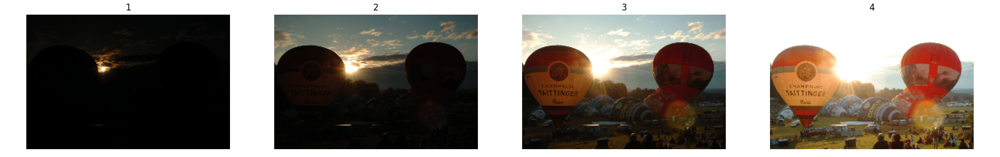
原理
像素级别的融合，每个像素计算三个指标：对比度、饱和度、亮度
对比度
就是拉普拉斯算子，在过曝图像或严重低曝光的区域，图像都基本是 255 或 0，因此这些区域是很平滑的，梯度信息几乎为 0，这些也是曝光融合中要舍弃的区域——过曝部分缺乏细节，低曝光区域缺乏细节和亮度。因此，论文提出用 laplace 算子提取图像的梯度信息，梯度信息越小的像素在融合时占据的比重就越小，相反梯度信息越大的像素的比重就越大。对输入的第 \(k\) 张图像 \(I_{k}\) 有：
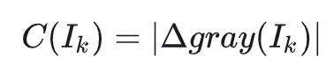
饱和度
同样针对过曝或严重低曝光，二者的饱和度是接近于 0 的，而那些饱和度高的区域常常是需要保留的区域，因此论文通过三通道的标准差来衡量饱和度大小，以此得到不同的比重
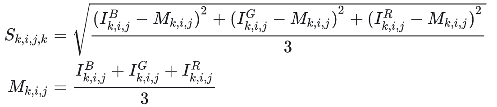
亮度
亮度越接近 0 或者 255 的，很可能就是处在过曝或严重低曝光区域，而亮度在 128 附近的常常可以认为是曝光良好的区域，这些区域的信息在融合过程中要尽量保留，比重尽量大：
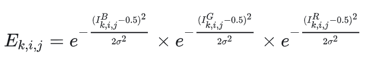
\(\sigma\) 是方差，论文中取 0.2。以上公式是我具体实现时使用的，三通道的比重相乘，为了简单，也可以提取出 YCrCb 通道，用 Y 通道算也可以。良好曝光不一定取 0.5。
融合
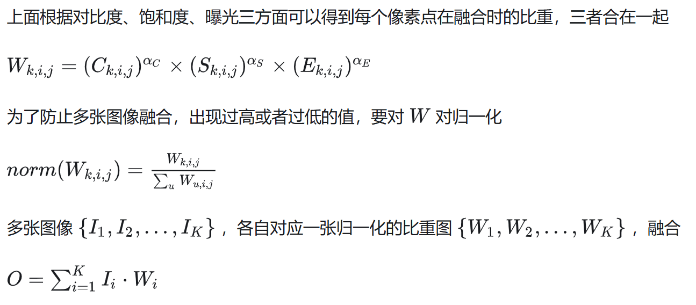
原理分析
这三个对比度、饱和度、曝光为什么要这样算，可以看下面的图：
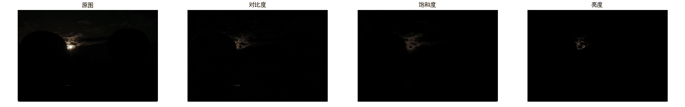
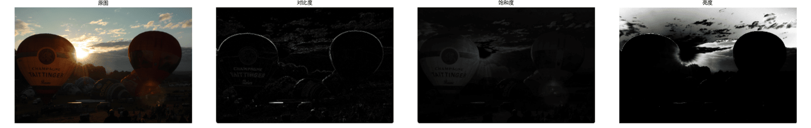
对于严重低曝光的图像，响应值比较高的就是光源附近的细节，这些细节得以保留，而过曝图像往往在这些地方是没有细节的。
对于局部过曝的图像，背光区域反而得到了较好的曝光，所以图中气球的细节和亮度响应值比较高，得以保留，而天空和光源部分的灰度值偏离 128、梯度也较小，因此这些过曝的区域的响应值（比重）很小，在融合时被舍弃。
细节
细节一：使用拉普拉斯金字塔
原作者在具体实现时，得到的结果会出现很多黑色和纯白色的斑点（灰度值为 0），而且存在一些光晕，如下：
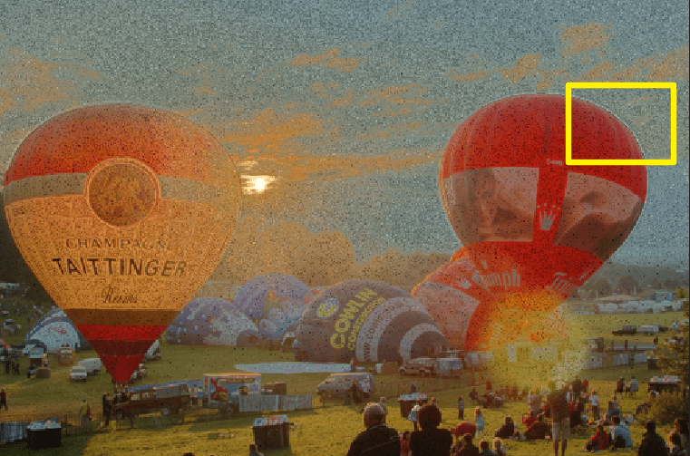
原因是由于多张图像之间的灰度跳变太大导致的——假设现在有图像 \(\{I_1, I_2, I_3, I_4\}\) ，在点 \((u, v)\) 处，比重值分别是 \(\{0,0.99,0,0.01\}\)，因此在融合时，\((u,v)\) 点的灰度值主要取决于 \(I_2\) ；在旁边一个点， \((u+1,v)\) 的比重值却是 \(\{0,0.01,0.99,0\}\) ，融合时就主要取决于 \(I_3\) ，而从 \(I_2→I_3\) 的灰度值跳变太大，因此最后看起来有很多噪声。
相邻点的比重相差会这么大，个人看法是比重由对比度、饱和度、亮度相乘得到，实际上，很多区域都是接近于 0，差不多 1e-4 的值，三个相乘量级就到了 1e-12，任意一个指标突然变大变小，权重就一边倒了，基本集中在某一张图像上。理想情况是一系列对比度、饱和度、亮度平滑变化的图像，就不会出现这种问题，但实际也不可能拍这么多精细的图像。
如何解决？一个很直观的想法就是对每张图的权重图做平滑处理，缓解灰度跳变，重新归一化后，再融合。作者使用了高斯滤波直径 101，标准差 17，才解决了黑点，但还是有光晕。而这个计算量也太大了。
所以又回到了论文的方法：构造金字塔解决分辨率过大和滤波核过大的问题。而且使用了拉普拉斯金字塔后，光晕问题都解决了！！
具体方法：
1. 对每张原始图像分解出 laplace 金字塔，对算出的比重图则分解出高斯金字塔
2. 每一层使用对应层的比重和对应层的 laplace 差值图（细节图）做融合，此时每一层都得到一个新的 laplace 差值图。
3. 最后一层的高斯金字塔的图，也要使用对应层的比重图进行融合，融合后的结果就是我们开始恢复用到的小图，也就是金字塔最底层的图。
4. 执行正常的拉普拉斯金字塔融合操作，即从上一步得到的小图开始，上采样之后加上对应的 laplace 差值图，直到顶层。
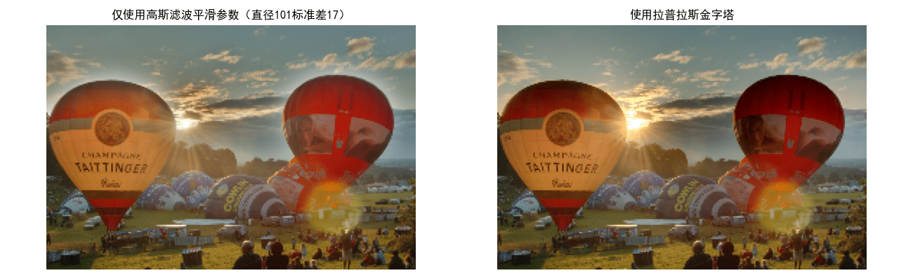
原文下方的评论区：为什么拉普拉斯金字塔可以解决权重异常的问题，因为权重的高斯金字塔，权重波动是在高分辨率层，低分辨率层权重很平滑，在融合拉普拉斯金字塔时，权重波动的高分辨层与拉普拉斯金字塔的高频相乘，低频信息相乘的权重很平滑，所以拉普拉斯金字塔实现了低频平滑，高频保留的效果。
细节二：拉普拉斯金字塔构造和常规不一样
一般，构造拉普拉斯金字塔，都是从图像的高斯金字塔中分辨率最低的图像开始，一路上采样，然后对应尺度的高斯金字塔结果减去这个上采样结果，在这次的上采样上继续上采样。
但这次，却是，从高斯金字塔的低分辨率上采样，对应尺度的高斯金字塔结果减去这个上采样结果，然后，下一次的上采样结果不是通过之前的上采样结果得到的，而是通过高斯金字塔的结果上采样得到的。。。就很坑
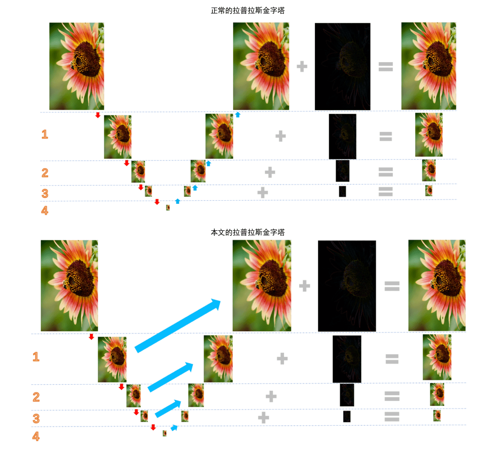
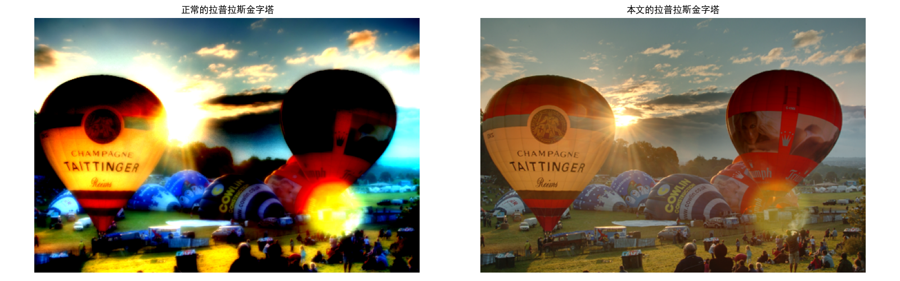
原文下方的评论区：金字塔修改的那个问题，说一下个人的理解，可以看到原始的金字塔有很重的 halo，因为分辨率最低的一层 halo 是最重的，如果一路上采样上去，halo 问题也会继续往外扩，而用左边的进行上采样，是因为左边的没有经过融合，不存在 halo，这也是金字塔能解 halo 问题的原因，本质上就是把低分辨率，重 halo 用高分辨率，低 halo 进行贴图